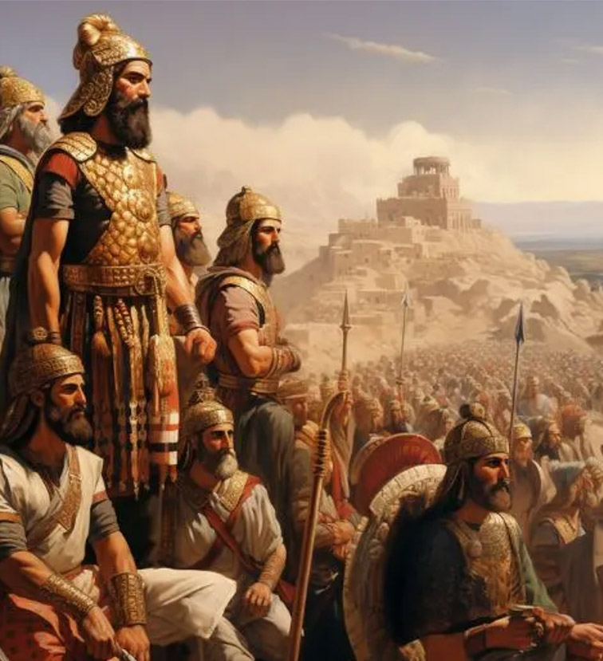

La Gastronomía iraní

La gastronomía iraní tiene sus raíces en la antigua civilización persa, considerada una de las culturas más influyentes de la historia de Asia y Oriente Medio. Sus tradiciones culinarias comenzaron a desarrollarse hace miles de años durante los grandes imperios persas, especialmente en épocas del Imperio aqueménida y el Imperio sasánida.
Gracias a su ubicación geográfica, Persia conectaba rutas comerciales entre Oriente y Occidente, lo que permitió la llegada de especias, frutas, métodos de cocción e ingredientes provenientes de distintas regiones del mundo. Esta mezcla de influencias contribuyó a la creación de una cocina diversa y sofisticada, caracterizada por el equilibrio entre sabores dulces, ácidos y aromáticos.